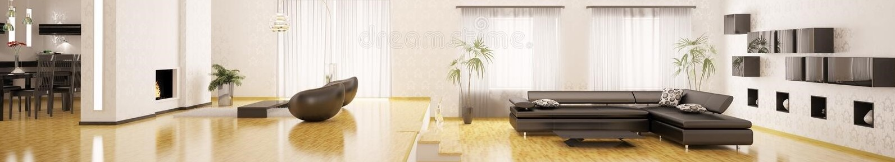
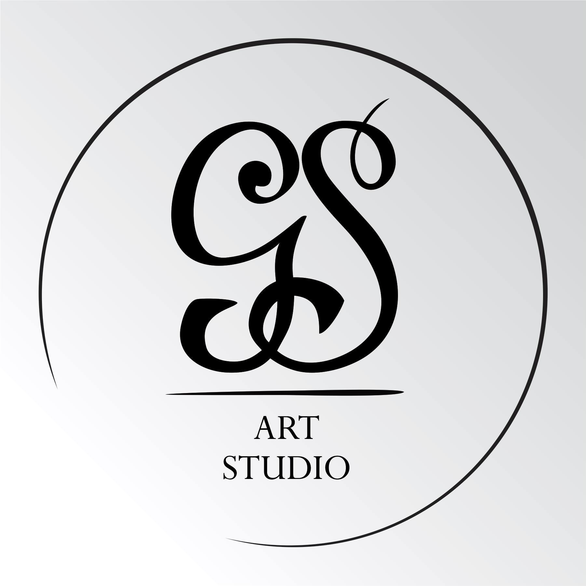

SERVICES

G.S. ART STUDIO
OUR PROVIDED SERVICES

Interjero dizaino paslaugos
Interjero dizaino paslaugos apima interjero dizaino projektų įgyvendinimą nuo vizijos iki realizacijos.
Pilną interjero dizaino projektą sudaro:
bendros interjero koncepcijos sukūrimas;
erdvių ir zonų funkcinis planavimas;
3D modelio sukūrimas su interjero vizualizacijomis ir erdvių video projekcijomis;
visų techninių darbo brėžinių (elektros instaliacijos, santechnikos ir kt.) parengimas;
korpusinių ir kitų baldų projektavimas ir brėžinių gamybai pateikimas;
baldų ir interjero detalių parinkimas;
interjero dizaino projekto įgyvendinimo priežiūra nuo statybų pradžios iki užuolaidų, paveikslų ir kitų dekoro detalių;
Interjero dizaino paslaugų kaina prasideda nuo 60 eurų už vieną kvadratinį metrą.
Interjero konsultacijos
Interjero dizaino konsultacijos vyksta kliento pageidaujama forma: vaizdo pokalbis, informacijos analizė apsikeičiant medžiaga ir jos aptarimas susirašinėjant elektroniniu paštu, konsultacija objekte ir kt..
Konsultacija renkantis būstą.
Konsultacijos metu išsamiai aptariami su būsto pasirinkimu ir jo interjeru susiję klausimai: išgryninami būsimų gyventojų poreikiai ir pasirinkimo kriterijai, nustatomas optimalus būsto plotas, išanalizuojami konkretūs būstai ir jų planai, aptariamos būsto įrengimo ar remonto, išplanavimo keitimo galimybės dabartiniu metu ir ateityje, įvertinant pastato nešančias konstrukcijas, santechnikos mazgus ir pan. Profesionali informacija ir patirtimi grįsti patarimai renkantis būstą padeda iš anksto suplanuoti interjero įrengimo biudžetą, atkreipia dėmesį į būsto trūkumus, kuriems šalinti gali prireikti papildomų išlaidų ir pan.
Konsultacijos renkantis būstą kaina prasideda nuo 250 eur. Konkretus įkainis nustatomas individualiai ir priklauso nuo konsultacijos formos (internetu ar gyvai), būstų, iš kurių renkamasi, skaičiaus ir pan..
Konsultacija erdvės / kambario įrengimo klausimais
Konsultacijos metu sutarta apimtimi suteikiama išsami ir profesionali informacija, susijusi su konkrečios erdvės ar kambario interjeru, sudaromas interjero koliažas, kuriame atsispindi siūloma kambario interjero koncepcija, spalvos, apdailos medžiagos, interjero detalės. Klientui pageidaujant parengiami techniniai darbo brėžiniai - išplanavimo keitimo, pertvarų įrengimo schemos, sienų ir grindų apdailos, plytelių klijavimo išklotinės, lubų įrengimo, gipso montavimo schemos ir pan. Taip pat pagal sutartą poreikį gali būti parenkamos konkrečios apdailos medžiagos, projektuojami ir parenkami baldai ir kitos dekoro detalės, sudaroma interjero įrengimo sąmata.
Konsultacijos erdvės / kambario įrengimo klausimais kaina prasideda nuo 350 eur. Konkretus įkainis nustatomas individualiai ir priklauso nuo sutartos konsultacijos apimties, brėžinių poreikio ir pan.
Landšafto projektavimas ir vizualizacijos
Landšafto vizualizacijų pagal realią topografiją rengimas, koncepcinis gyvenamųjų erdvių projektavimas, namo įkurdinimas sklype.
Turite sklypą ir svarstote, kokio tipo namas geriausiai atitiktų jūsų viziją ir poreikius?
Norite pamatyti, kaip jūsų svajonių būstas atrodytų konkrečioje aplinkoje?
Jūsų sklypo reljefas išskirtinis ir standartiniai projektai jums netinka?
Landšafto vizualizacijos leis pamatyti skirtingų idėjų realizaciją dar iki projektavimo stadijos ir išsirinkti tinkamiausią sprendimą.
Landšafto projektavimo paslaugų kaina derinama individualiai.
Korpusinių baldų projektavimas ir gamyba
Visų tipų korpusinių baldų - virtuvės baldų, sieninių spintų, lentynų, vaikų kambario baldų, drabužinių - projektavimas, konstrukciniai brėžiniai ir gamyba iš medžio masyvo, lukšto faneruotės, MDF pagal individualų projektą.
Baldų projektavimo paslaugų kaina prasideda nuo 300 eur ir derinama individualiai.
Vienetinių interjero elementų kūrimas ir gamyba
Bendradarbiavimas su metalo ir marmuro meistrais leidžia įgyvendinti įdomiausias interjero idėjas ir pasiūlyti išskirtinius interjero gaminius:
individualaus dizaino valgomojo stalus;
kavos ir šoninius staliukus;
lentynas;
metalo ir medžio konstrukcijų baldus;
dekoratyvinius sienų skydus ir kitas interjero detales.
Vienetinių interjero elementų kūrimo ir gamybos paslaugų kaina prasideda nuo 200 eur ir yra derinama individualiai.